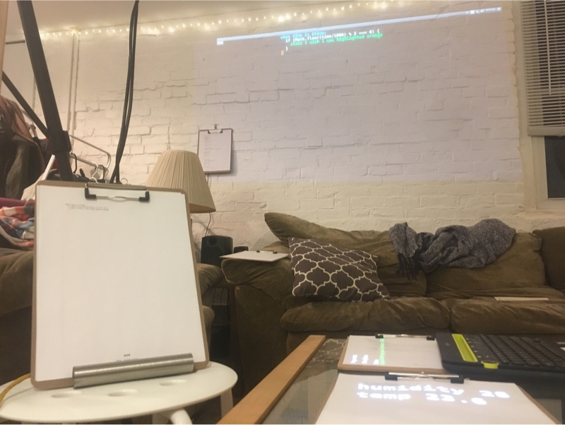

March 17, 2019
I am exploring the idea of "programmable spaces" — where the concept of a computer is expanded outside a little rectangular screen to fill the entire room. Interacting with the programmable space means using physical objects, not virtual ones on a screen. Bringing computing to the scale of a room makes it a communal and social experience.
Previously, I made a programmable space with a fixed 3x3 grid of papers on a wall next to an always-on text editor. It was a good demonstration but had some issues:
I made a new space to address these issues. In this new space, programs were physically represented as a clipboard containing a printout of the latest source code. On the back of the clipboard was an RFID card to uniquely identify the program. For this demo, I pre-made 15 editable clipboard programs.
Programs were detected by RFID sensors in the room. When a program is placed on top of an RFID sensor then the program is run. Four RFID sensors were added to a coffee table. One RFID sensor was added to a wall where a clipboard could be hung by a nail. Two "program stands" (plastic sign holders with an RFID sensor on the back) also ran programs placed on them. Two projectors displayed graphics on the coffee table and the wall.
Coffee table with 4 RFID sensors in the middle. Wall sensor on the upper left. Program stands on the left and right.
Top view of the coffee table. The upper left corner shows an exposed RFID sensor and some of the wiring below.
One of the programs was the text editor. When hung on the wall sensor, the text editor would run and wish its graphics would be projected on the wall. The program to edit would be chosen by placing it on the program stand. A wireless keyboard was used to edit the text in the text editor. Keyboard shortcuts saved the updated code and printed it out on paper. Prints of updated code were put in the clipboard on top of the previous versions of code (physical version control). To run the updated program, it would be moved from the stand to the table.
 On the left: A program sitting in the program stand. The text editor on the wall edits that program's code.
The keyboard, projector, text editor, program sensors, and all other programs communicated by updating and subscribing to "facts" in a global list of facts. Each fact is related to the program that claimed the fact so when a program dies so does its facts. For example, one program could claim the fact wish I was colored blue and then a separate program could listen for facts like that and project the graphics to make that program blue. The limit of one printed page of source code was also a nice limit on the complexity of one program.
Most of the improvement compared to the last system was made physically, not in code. The same system was used as in my previous fixed 3x3 program demo but with a new program to say when an RFID sensor sees a program: wish it was running.
The RFID clipboards worked well to allow programs to be moved and read by humans, while also being easily detected by the system. The clipboard as a physical object was common enough that it wasn't jarring to see in a living room but special enough that it wasn't just a piece of paper. A printed piece of code clipped into a special clipboard became a "program" in the system.
I think papers bordered with colorful dots have, for better or for worse, become part of the brand of Dynamicland. As I have explored programming spaces I have internalized that "it's not about the dots on the paper" and it's about the system behind the papers. Yet I can see how it can take time working in the system to forget about the dots and cameras and projectors. The use of clipboards in my space was a nice way to not use papers with colorful dots but try and achieve a useful "system behind the papers".
However, the RFID clipboards had their limits. The fixed number of places where clipboards could be placed (on top of the 7 RFID sensors) wasn't enough. I wished programs could be placed on any surface and any position to give me total freedom in arranging programs in a way that matched the ideas in my head. I like Dynamicland's use of cameras in the ceiling to track programs because it allows programs to be rearranged with 2D freedom on tables and walls (at the cost of the computer vision complexity and dealing with lighting & occlusion).
Embedding the sensors in a normal living room was a glimpse at what it might be like to have a programmable space in the home. On one hand, it was nice to not need to "leave the living room", either physically or with my attention, when using the system. This is important for having a social and communal space. On the other hand, the RFID sensors, projectors, and wiring still don't feel part of the living room. There is a lot of room to make them less ugly and more like real pieces of furniture.
In addition to the physical changes in the space, some code changes made the experience better. I added a compilation step when saving updated code with the goal of making the system code more readable. Hiding the low-level code used to run the system and to make subscriptions made many programs shorter. Shorter programs were easier to understand and required less typing. Less typing meant fewer typos and reduced the frequency of errors somewhat.
when time is $time:
if (Math.floor(time/1000) % 2 === 0) {
claim I wish I was highlighted orange
}
Uncompiled
const { room, myId, run } = require('../helper2')(__filename);
room.on(`time is $time`,
results => {
room.subscriptionPrefix(1);
if (!!results) {
results.forEach(({ time }) => {
if (Math.floor(time/1000) % 2 === 0) {
room.assert(`I wish I was highlighted orange`)
}
});
}
room.subscriptionPostfix();
})
run();
Compiled
The compilation step was done by a program that listened for facts about updating source code, parsed the code, and then claimed a new fact about the compiled source code. Additionally, I added syntax highlighting to the text editor program to separate system level code from other code.
While the code on the left in the example above is shorter, it still does not read like prose. The base programming language is still there for "writing code" and this brings all of the syntax and errors as the base language. In the example above the base language is JavaScript but the system is language agnostic and other programs use different base languages. For now, I am thinking most about the "system level language" - how programs in the room communicate. In the long term, I think it will be important to have a language that reinforces the concept of programs in the room working together. Existing programming languages were not designed to live on a piece of paper, talk to other pieces of paper, and be casually read and edited by people.
I also added a program to compile code for Particle Photon microcontrollers. These microcontrollers do not run a full Operating System but can run code and speak to the room via a WiFi connection. Because they are small and cheap, they are a nice platform for connecting things to the room such as RFID sensors and humidity sensors. While they are nice, the Photon boards are not particularly special and I could have chosen any WiFi connected microcontroller, Raspberry Pi, or another computer.
I think inputs and outputs to a programmable space besides projectors and cameras are important to get away from the legacy of "rectangular computer objects" and I am excited to explore this area more. I imagine there could be a programmable space completely free of projectors, pixel screens, or cameras if there are sufficiently interesting inputs and outputs in the space.
I was inspired by the way Raspberry Pi's can be programmed at Dynamicland — by pointing a program that wishes it ran on a Raspberry Pi at the specific Raspberry Pi the code should be run on. More details can be found in this post by Omar Rizwan. In my space, a program that wished some code would be running on a Particle Photon would be placed on a "program stand" next to a Particle Photon. Another program in the room listened for what programs were running on the stand and if that program wished code would run on the Photon, it would parse, compile, and flash the code to the Particle Photon. The RFID sensors detecting programs in the room were all connected to Particle Photons programmed in this way.
I have been programming microcontrollers for years and it was an eye opening experience to physically put some code on a stand and have the code running on a microcontroller within seconds.
A Particle Photon board was wired to a temperature and humidity sensor. Using some Arduino code as a reference, I made the code to run on the Photon with the text editor on the wall. The program was placed on the program stand to put the code on the Photon. Once every two seconds, the Photon would read sensor values and make a claim like Photon203 says the humidity is 29 and temp is 22.89.
when $ says the humidity is $H and temp is $T:
let ill = room.newIllumination()
ill.text(25, 50, "humidity " + H)
ill.text(25, 100, "temp " + T)
room.draw(ill)
One program on the table listened for facts about temperature and humidity and displayed them as text.
when $ says the humidity is $H and temp is $T:
if (H > 50) {
claim I wish I was highlighted red
} else {
claim I wish I was highlighted green
}
Another program on the table listened for facts about temperature and humidity and wished it was highlighted green or
red, depending on the humidity value.
let data = []
const max_data = 10
const OX = 120
const W = 12
const H = 10
const C = 4
when $ says the humidity is $H and temp is $T:
data.push(H);
data = data.slice(-max_data);
let ill = room.newIllumination()
// Draw the data as a list of text
ill.fontsize(12)
ill.text(25, 25, data.join("\n"))
// Draw axes of the line graph
ill.line(OX, H, OX + max_data*W, H)
ill.line(OX, H, OX, H + 100*C)
ill.stroke("yellow")
// Draw the lines of the line graph
for (let i = 0; i < data.length; i +=1) {
if (i > 0) {
ill.line(OX + (i-1)*W, H+data[i-1]*C,
OX + i*W, H+data[i] *C)
}
ill.ellipse(OX + i*W, H+data[i]*C, 3, 3)
}
room.draw(ill)
otherwise:
let ill = room.newIllumination()
ill.text(25, 25, "No data yet")
room.draw(ill)
A third program kept track of the last 10 humidity values, showed them as text, and made a basic line graph.
While this was a small demo, I was pleased with it. All the code was printed out on the clipboards on the table so anyone could pick them up and see how they worked. You didn't have to care about the complexity of the low-level Photon code, but it was there if you were curious. Remixing was encouraged because anyone could pick up the program and edit it using the always-on text editor on the wall. This wasn't a pre-built dashboard you put on a TV where you can only choose certain graph types. In this space it was easy to make quick and informal displays of data. The programs on the table could be physically moved to the wall to make a bigger display of the data for presentation. This reminds me of Bret Victor's description of a "Seeing space" where a room is not only designed for making but also seeing what is going on. I have explored that idea in the past but struggled to find a nice way to make informal and customizable displays of data. This limited demo already feels better and isn't limited to what can fit on one or two computer screens.
Unfortunately, the Particle Photon microcontrollers were not a totally equal member in the room. Claims from a Photon went from the Photon's C code → HTTP → A program that translates the HTTP request to the system protocol → the rest of the system. I learned that decentralization will need to become an important part of the system. Computation needs to be able to scale beyond a single central computer or the "size of the room" will always be limited. Dynamicland's approach to distributed computing is touched on in this post, but I haven't grasped the concept and I'd like to explore this area in the future.
Other areas I'd like to explore:
If you have thoughts or questions, feel free to email or reach out to me on Twitter.